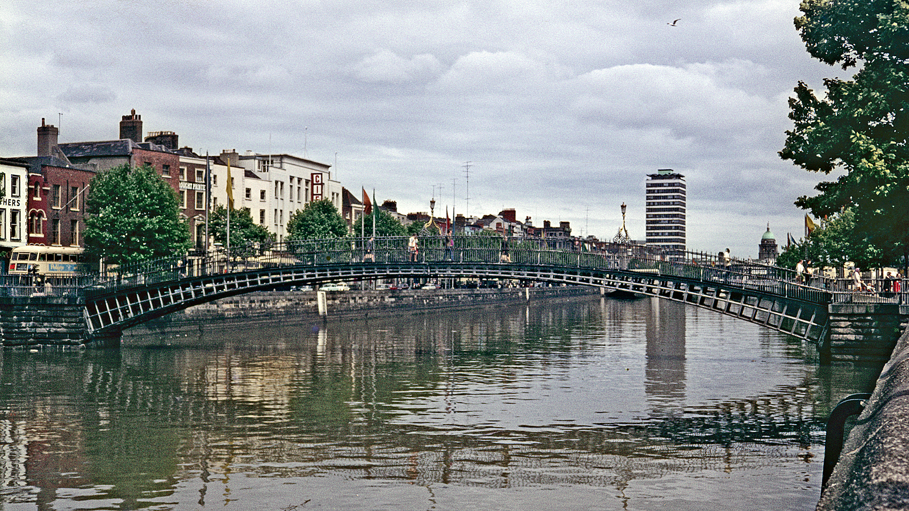

Conrad Dublin

The Waldorf Hilton, London: an editorial hotel guide
The Waldorf Hilton, London is a hotel in International destination. This GrowBlackStyle guide looks at the property through the lens of location and first impressions. The aim is to help travelers understand the setting, compare practical considerations and decide whether the destination fits the kind of trip they are planning.
Location and travel context
The location is an important part of the decision. A hotel in International destination can be evaluated not only by the room itself, but also by how easily a traveler can reach the areas, attractions, restaurants and transport connections that matter to the trip. Before booking, map the places you expect to visit and compare the real travel time from the property rather than relying only on a neighborhood label.
What to consider before booking
Travelers should compare the available room categories, cancellation rules, taxes, resort or destination charges where applicable, breakfast inclusions, parking arrangements and the conditions attached to promotional rates. These details can materially change the final cost of a stay.
Who may prefer this type of stay?
The Waldorf Hilton, London may appeal to travelers whose plans are centered on International destination and who value convenient access to the destination. Couples, leisure travelers and visitors building a city itinerary can benefit from comparing the hotel's position with alternative properties in the same area.
Planning the surrounding trip
A useful approach is to build the itinerary around geographic clusters. Group nearby attractions together, identify the closest public-transport options and allow extra time for airport transfers and peak-period traffic. This can make a centrally located hotel more valuable than a superficially cheaper property farther away.
Questions worth checking with the hotel
Because rates, facilities and operating policies can change, verify current information directly before paying a non-refundable rate. Confirm check-in and check-out times, available room types, accessibility information, parking, pet policies and any mandatory fees that may not appear in the headline room price.
GrowBlackStyle Editorial Verdict
The Waldorf Hilton, London is best evaluated in the context of International destination rather than by room price alone. Its strongest potential advantage is the experience created by its location and the convenience that location can provide during a trip. Travelers should compare the complete booking cost and current hotel policies before making a final decision.